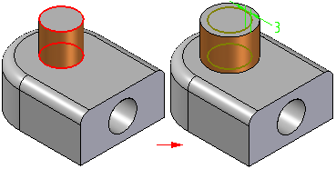
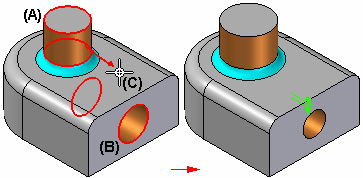
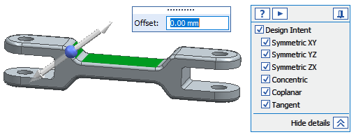
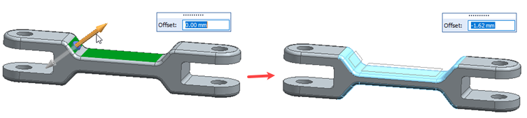
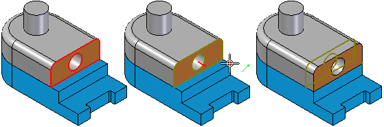
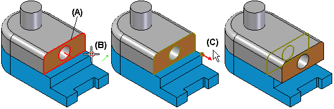

Offset Faces command
Use the Offset Faces command to offset selected faces on a part. The faces are offset using the normal vector of the selected faces. The geometry of adjacent faces is automatically trimmed or extended to maintain model integrity.

Hole feature faces cannot be selected for offset.
You can use the options on the command bar to specify whether you want to offset individual faces you select, a tangentially continuous chain of faces, the set of faces that comprise a feature, or an entire body.
You can define the offset distance by typing a value on the command bar, or by selecting a keypoint.
Offsetting Faces by Distance and Direction
When you offset faces by typing an offset distance on the command bar, you define the offset direction using the cursor in the graphic window. An offset dimension is created that you can edit later.
Offsetting Faces by Keypoint
When you select a keypoint to define the offset distance, you must also select a reference face to define the normal direction of the offset. The reference face must be one of the faces you selected to offset. No offset dimension is created with the keypoint method.
Offsetting Multiple Faces
You can only define one offset direction per offset faces feature. An arrow is displayed at the center of the first face you select.
When offsetting multiple faces, this can result in some features on the model getting larger and some getting smaller. For example, when you select two cylindrical faces, one that forms a protrusion (A) and one that forms a cutout (B), and then define the offset direction pointing outwards from the first face (C), the diameter of the protrusion face gets larger and the diameter of the cutout face gets smaller.

Offsetting faces with Synchronous Offset option
Use the Synchronous Offset option in the Offset step to use the synchronous technique to offset faces. When you use this option, the steering wheel and Design Intent dialog box display so that you can directly offset the selected face or body.

Because each selected face moves along its normal vector, you can move multiple faces along different directions. In the following example, notice that the selected faces move in opposite directions, based on the offset value.

Offsetting Faces in the Context of an Assembly
When offsetting faces (A), in the context of an assembly, you can select a keypoint (B) on another part in the assembly to define the offset distance.

The offset faces feature is associatively linked to the keypoint on the part you selected. If the other part changes, the offset faces feature updates. You can use the Break Link command on the Feature PathFinder shortcut menu to break the associative link.
Defining a Relative Distance From a Keypoint
When you use the keypoint method to define the offset distance, you can also define a relative distance from the selected keypoint.
For example, when working in the context of an assembly, you may want to offset a face (A) 10 millimeters beyond the keypoint (B) you select. When defining a relative offset distance, you must also define the relative direction (C) from the keypoint.
